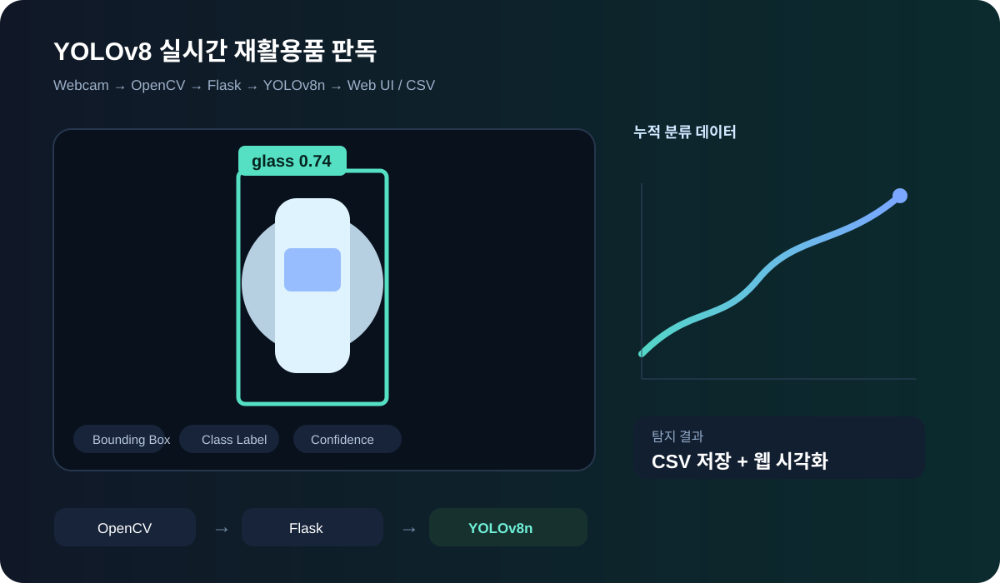
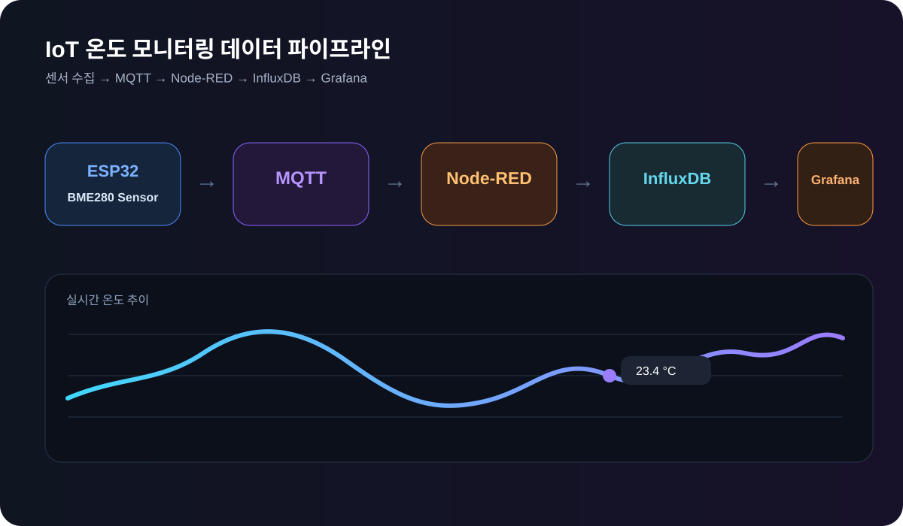
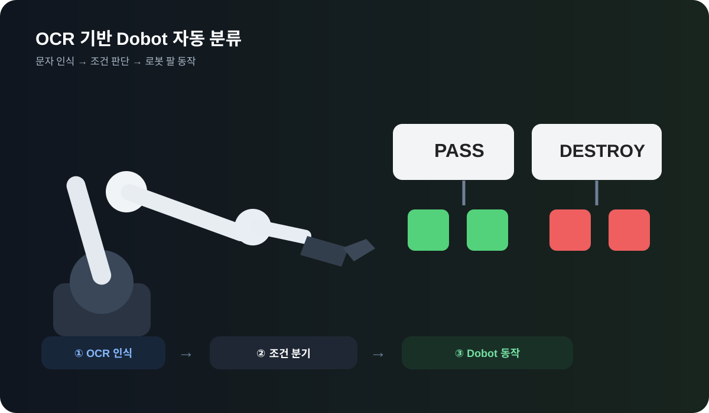
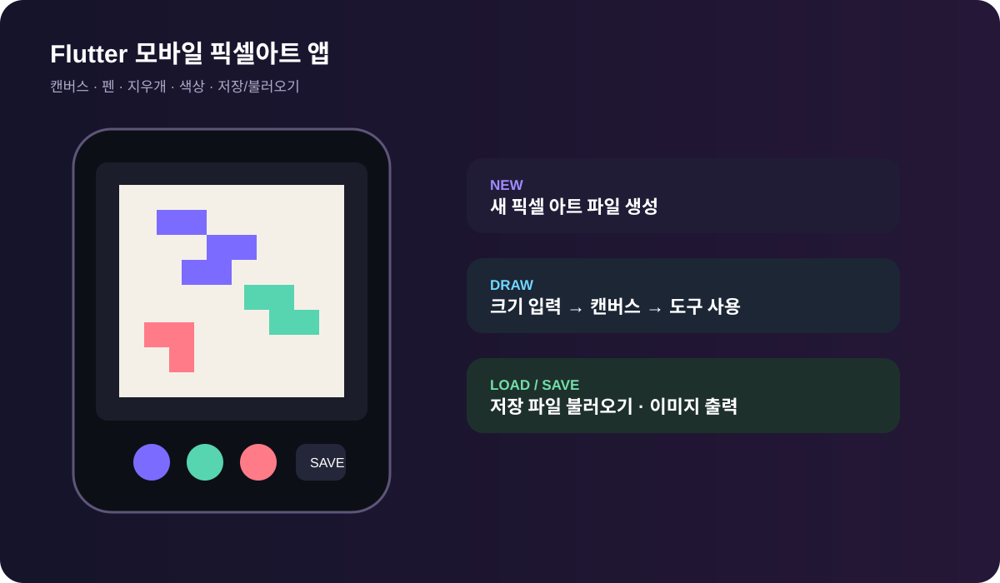

01Capstone · Team
FoodGuard
외식업 식자재·발주 및 수요예측 통합 관리 시스템
ReactTypeScriptSpring BootREST APIGit/GitHub
 FoodGuard 홈 대시보드
FoodGuard 홈 대시보드
 발주·알림 UI
발주·알림 UI
 AI 수요예측 화면
AI 수요예측 화면
프로젝트
판매·재고·식자재 발주와 AI 수요 예측을 하나의 서비스에서 관리하는 팀 프로젝트입니다.
담당 기능
- 식자재 발주 신청 UI 구현
- 발주 승인·발송 단계 알림 로직 연동
- 미읽음 알림 뱃지 및 주기적 조회 기능 구현
- 읽음/삭제 UX 분리 및 재오픈 오류 수정
- 발주 신청자 본인에게 발생하던 불필요 알림 제거
jhy 브랜치 보기 →
02AI · Team
YOLOv8 기반 실시간 재활용 폐기물 분류 시스템
웹캠 영상을 분석해 재활용품을 탐지·분류하고 결과를 기록하는 시스템
PythonYOLOv8nOpenCVFlaskRoboflow

실시간 탐지 → 분류 → CSV 저장 → 웹 시각화 흐름
- 약 9,000장의 이미지 데이터셋을 활용한 YOLOv8n 학습
- OpenCV 기반 실시간 웹캠 프레임 처리
- 탐지 클래스·Bounding Box·신뢰도 표시
- Flask를 이용한 AI 모델과 웹 화면 연동
- 탐지 결과 CSV 저장 및 누적 분류 결과 시각화
구현 결과 실시간 객체 탐지·분류, CSV 저장, 누적 데이터 시각화 기능 구현
03IoT · Team
IoT 온도 모니터링 시스템
센서 데이터를 수집·저장·시각화하고 과열 상태를 경고하는 시스템
ESP32MQTTNode-REDInfluxDBGrafana

ESP32 → MQTT → Node-RED → InfluxDB → Grafana 데이터 흐름
- BME280 센서를 이용한 온·습도 데이터 수집
- MQTT 기반 센서 데이터 실시간 전송
- 임계 온도 도달 시 Buzzer 경고
- Node-RED → InfluxDB 데이터 저장 파이프라인
- Grafana 실시간 모니터링 대시보드 구성
개발 범위 센서·DB·Grafana 기능은 완료했으며 외부 AI API 기반 예측 기능은 연동 단계까지 진행했습니다.
04Robot Automation · Team
OCR 기반 Dobot 로봇 자동화 시스템
문자를 인식해 조건에 따라 로봇 팔 동작을 자동 전환하는 「철거대장」 프로젝트
Dobot Magician LiteDobotLabOCRBlock Coding

OCR 판독 결과에 따라 보존/파괴 동작을 분기하는 로봇 자동화
- pass / destroy 문자 OCR 인식
- 인식 결과에 따른 조건 분기 로직 설계
- Dobot 암 위치 제어 및 블록 제거 동작 구현
- 인식 → 판단 → 행동 반복 루틴 통합
- 조명·문자 크기에 따른 인식률 문제 테스트 및 조건 조정
05Mobile · Personal
Flutter 모바일 픽셀아트 앱
모바일 환경에서 픽셀 그림을 제작하고 저장·출력하기 위한 개인 프로젝트
FlutterDartAndroid StudioUI/UX

신규 작성 / 저장 파일 → 캔버스 → 편집 및 저장 흐름
- 신규 작성 / 저장 이미지 불러오기 흐름 설계
- 픽셀 캔버스·펜·지우개·색상 선택 도구 설계
- 실행 취소·되돌리기·저장 Use Case 설계
- 밑그림 이미지 삽입 및 투명도 조절 기능 설계
- 완성 이미지 파일 출력 흐름 설계
현재 정리 기준 기획·Use Case·Flutter 프로토타입 자료를 중심으로 작성했으며 구현 범위는 소스 검증 후 추가 업데이트 예정입니다.